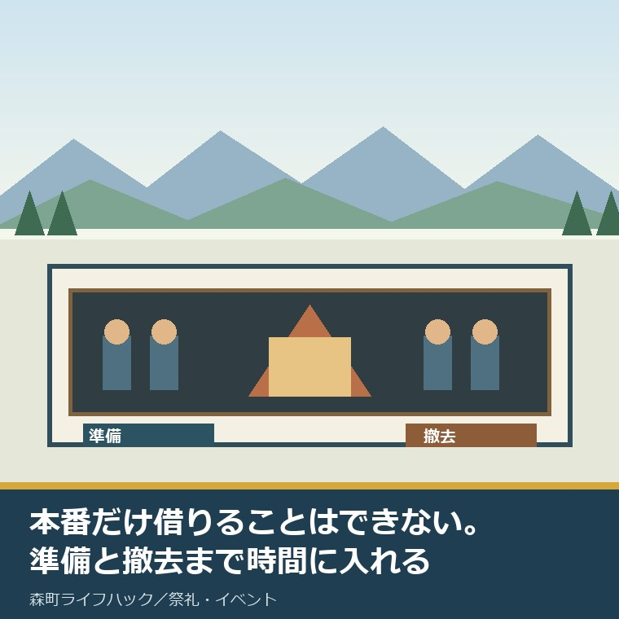
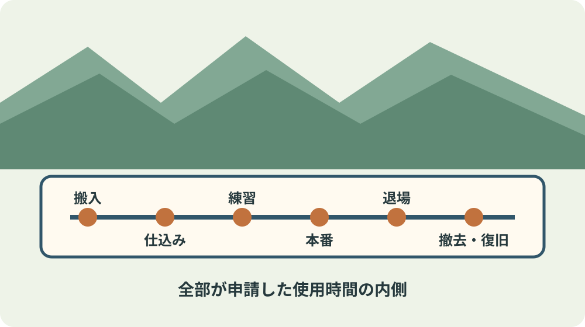
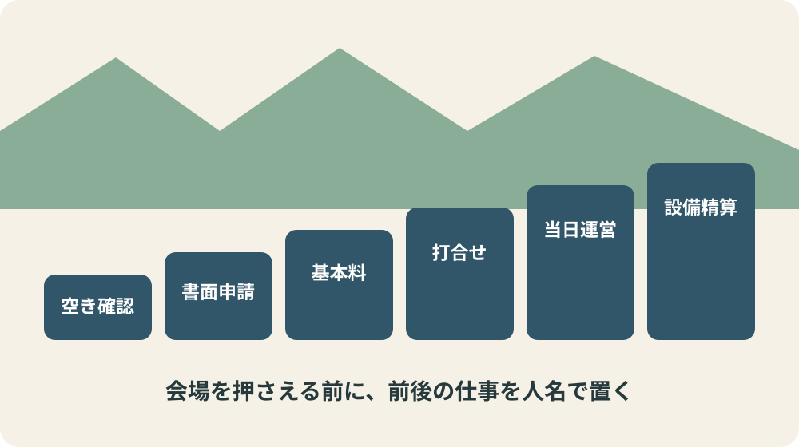

森町文化会館の利用｜準備・撤去込みで申請を考える

この記事の要点
Q. 森町文化会館の利用申請は、公演や講座の本番時間だけで考えてよいですか。
A. 本番だけでは足りません。準備、練習、来場者の入退場、後片付けまでに必要な一切の時間が使用時間です。大ホールは12か月前から30日前、小ホールは6か月前から5日前、その他の施設は3か月前から5日前が申請期間です。先に搬入担当、受付担当、撤去担当を人名で置き、その仕事が収まる区分を選びます。料金表の金額だけでなく、冷暖房、設備、入場料、町外利用による加算も確認します。
森町文化会館で発表会や講座を開きたい人へ、2026年9月5日に公式の利用案内、予約方法、使用料、事前打合せ案内を確認しました。
最初に決めるのは開演時刻ではありません。荷物が着く時刻と、最後の人が原状回復を終える時刻です。
文化会館は借りれば終わりじゃない。舞台に立つ時間の前後を誰かが運んで片づける。その時間を申請から消すのは、担い手にただ働きを押しつけるのと同じです。
これは会館へ注文する前に、使う側が自分たちの段取りを見直す話です。
私には、この会館で主催者として公演を開いた体験ストックがありません。経験者のように語らず、確定した規則と私の意見を分けます。
結論は単純です。空き確認の電話より先に、準備から撤去までの時刻表と担当者表を一枚つくります。
申請期間は施設によって12か月、6か月、3か月前から
空き状況は文化会館のホームページか電話で確認し、利用希望日を問い合わせます。
ただし、電話や口頭だけでは使用許可申請になりません。「森町文化会館使用許可申請書」の提出が必要です。
大ホールは使用日の12か月前から30日前まで、小ホールは6か月前から5日前まで、その他の施設は3か月前から5日前まで受け付けます。
受付開始は該当する月の1日午前9時です。1日が休館日なら、その月で最初の開館日になります。
窓口は森町森1485の文化会館事務室で、受付時間は9時から17時です。開館時間の9時から21時30分とは同じではありません。
月曜日は休館で、月曜が祝日の場合は翌日以降の平日が休館です。12月28日から1月4日も休館と案内されています。
申請書の正式な提出方法が窓口、郵送、メール、FAXのどこまで可能かは確認ページに明記されていません。書く前に事務室へ聞きます。
仮予約の保持期間と許可が出るまでの日数も未掲載です。「電話で空いていた」を会場確定として告知しない方が安全です。
使用時間には準備、練習、入退場、後片付けを入れる
公式案内は、使用時間に準備、練習、後片付けなどに必要な一切の時間を含むとしています。
主催者へは、仕込み、撤去、入退場、休憩に余裕のある日程を組むよう求めています。
たとえば14時開演でも、14時からの区分だけを見ればよいわけではありません。舞台装置、受付机、誘導表示、出演者の着替え、客席確認が先にあります。
終演後も、観客が退出し、忘れ物を確認し、借りた設備を戻し、ごみを集め、施設を原状に戻すまで終わりません。
延長は事前に館長の許可が必要です。案内には30分以上の延長は認めないとの記載があります。
一方、料金表には超過30分当たりの加算があります。具体的な運用は会館へ確認し、当日の延長を前提に予定を組まないことです。
文化会館大ホールと2026年度の主催公演を整理した記事では、固定席797席と車イス専用席3席も確認できます。

料金は部屋代だけで終わらない
使用料は午前9時から12時、午後13時から17時、夜間18時から21時30分、全日9時から21時30分の区分です。
大ホールの基本料は、平日が午前8,800円、午後13,200円、夜間17,600円、全日39,600円です。
土日祝日は午前11,000円、午後16,500円、夜間22,000円、全日49,500円です。
小ホールは、土日祝日の午前3,300円、午後4,950円、夜間6,600円、全日14,850円です。
これらは基本料です。大・小ホールの冷暖房は基本料の50％加算、町民または町内事業者以外の利用は20％加算です。
入場料を取る場合や営業目的の場合にも加算があります。料金表の一行だけを予算にしません。
大・小ホールを練習または準備だけに使う場合は基本使用料の50％とあります。本番枠に含めた準備時間が自動的に半額になる意味ではありません。
基本料は申請後に納付書が発行され、使用日前日までに指定金融機関の窓口で支払います。文化会館窓口では支払えません。
冷暖房と備品は大・小ホールの使用後に精算し、納付書発行から2週間以内に支払う案内です。
利用者都合の取消では、使用料を返さないと案内されています。例外条件は確認ページで分からないため、変更の可能性が出た日に会館へ相談します。
大ホールは約1か月前の打合せで現場を数字にする
大ホールでは利用のおよそ1か月前に、申請書へ書いた会場責任者へ会館から連絡があります。
打合せは火曜日から日曜日の9時から17時で、目安は30分から1時間です。
イベント内容、照明、音響、注意事項、進行時間、舞台演出、配置、備品、設備費の概算を確認します。
進行表やプログラムを持参します。曲目や登壇者名だけでなく、誰が何分で何を動かすかまで書くと話が早くなります。
下見は空き状況によって可能ですが、技術スタッフの立会いが必要で、事前予約も必要です。
音響装置、ワイヤレスマイク、スクリーン、プロジェクター、照明、演台、ピアノには品目別の料金があります。
備品の在庫数と舞台技術スタッフ費は確認ページで分かりませんでした。持ち込み可否を含め、打合せで数字にします。
団体内の打合せ担当が、当日責任者と違う場合は、決まった内容を口頭だけで渡さず一枚に残します。
9月6日公演は来場者対応の具体例になる
2026年9月6日の「最強ものまね競演」は13時30分開場、14時開演で、大ホール開催です。
来場者には全席指定、未就学児入場不可、車イス席は会館へ問い合わせることが案内されています。
チケット購入時には購入者カードの記入と窓口提出への協力を求め、事前記入で手続きを円滑にすると書かれています。
販売開始は9時、館内入場は8時30分で、発売前の待機場所はないとも明記されています。
駐車場案内では南側250台と、近隣企業の協力による臨時駐車場が示されています。一般アクセスページの270台とは数字が違います。
この公演の案内が丁寧なのは、座席販売だけでなく、待機、入場、車イス席、駐車、帰路まで来場者の動きを分けている点です。
自分たちの発表会でも、開場時刻だけでは足りません。受付前に来た人、送迎車、車イス利用者、終演直後の集中を担当表へ置きます。
催しの日の駐車場と交通案内を確認する記事も、施設予約の外にある移動を考える材料になります。
良い点：施設ごとの期限と料金が公開されている
良い点は、大ホール、小ホール、その他施設で申請期間が分けて書かれていることです。
大ホールは固定席797席と車イス席3席、小ホールは平土間で椅子や展示パネルを置けます。
研修室も第1が45人、第2が24人、第3が16人と、集まりの規模から選べます。
基本料と加算率、設備の品目別料金も公開されています。質問する前に、自分で概算をつくれます。
もう一つは、大ホールの事前打合せ項目が具体的なことです。進行、照明、音響、配置を本番一か月前に洗い出せます。
町の施設を使う人が、この情報を先に読むだけでも、窓口で同じ説明を繰り返す負担は減ります。
注文したい点：空き確認から許可までの状態を一枚で見たい
その上で、空き確認、仮の相談、申請書提出、許可、支払のどこで日程が確定するか、一枚の流れがあると助かります。
公式ページには複数の案内があり、その他施設の受付開始は新しい案内で3か月前、古い予約状況ページには6か月前という記載が残ります。
この記事では更新日の新しい予約方法と利用案内に合わせて3か月前を採りましたが、申請日は会館へ確認します。
申請書の提出手段、仮予約の保持期間、許可までの日数、還付の例外も、初めて使う団体が判断する材料です。
情報が別ページに分かれると、最後は電話が増えます。窓口職員の説明負担を減らすためにも、利用者が今どの段階か分かる表示がほしいです。
ただし、分からないまま勝手に進める理由にはなりません。まず自分たちの時刻表と質問を一枚にして、まとめて確認します。
祭礼を支える準備と片付けを考えた記事では、当日だけでは見えない担い手の時間を書いています。
もりもり2万人まつりの搬入・搬出を整理した記事も、催しの前後を時刻で見る例です。
大石の視点：会場の容量より先に、団体の余力を見る
大ホールに800人入れることと、800人を安全に迎えられることは別です。席数は建物の容量であって、団体の受付、誘導、会計、救護、撤去の余力を示す数字ではありません。
私は不動産の仕事で、建物の広さだけ見ても、その場所の使いやすさは決まらないと感じています。誰が鍵を開け、誰が荷物を運び、最後に誰が確認するかで、同じ建物の負担は変わります。
ただし、これは文化会館で公演を主催した体験談ではありません。建物を使う仕事から得た一般的な見方を、公式の利用条件に重ねた私の意見です。
森町の団体には、仕事や家事を終えてから練習や連絡を続けている人がいます。会場費を払えるかだけでなく、その人の夜間と休日を何時間使うかも費用として数えたいです。
発表の質を上げようとすると、飾り、照明、音響、配布物が増えます。増やすたびに、搬入物、確認事項、撤去時間、保管場所も増えます。
全部を豪華にするより、客席案内は紙一枚、受付は一か所、舞台転換は一回など、団体の人数に合う設計にする方が続きます。
町の催しに可能性があると感じるからこそ、「熱意がある人なら何とかする」で予定を閉じたくありません。その人が次回も参加できる余白を残す方が、会館を長く使えます。
申請書には書かれない送迎もあります。出演者が子どもなら保護者、高齢者なら家族の送迎時間が、開場前と終演後へ集中します。
主催者だけでなく、家庭側の時間も含めて無理のない開演時刻を選びます。昼公演が必ず楽、夜公演が必ず大変とは決めず、参加者の暮らしに合わせます。
大きく使える施設だから大きく催す必要はありません。施設の選択肢を、無理に規模を上げる圧力ではなく、小さな団体も試せる余白として使いたいです。
後継を育てるなら、熟練者だけが分かる仕事を残さないことも要ります。鍵、備品、会館との連絡先、撤去順を初参加の人にも読める言葉で残します。
一回の成功を、同じ人が次も全部背負う理由にしません。終演後に十分快だけ振り返り、足りなかった人手と余った作業を次の担当表へ移します。

対案・結論：開演時刻の前後を担当者名で埋める
今日できる小さな一歩は、紙の中央に本番時刻を書き、その左へ搬入、仕込み、練習、開場、その右へ退場、撤去、原状回復を書くことです。
各作業の下に担当者名と必要分数を書きます。「みんなで」は担当者名ではありません。
大ホールなら30日前、小ホールとその他施設なら5日前という締切から逆算し、申請前にこの一枚を団体内で共有します。
料金は基本料に冷暖房、設備、入場料、町外利用の該当を足し、分からない項目だけ会館へ質問します。
森町では、催しを続けたい人がすでに練習、連絡、送迎、会計を担っています。その努力を当然の無料時間にしないことが、会館利用の出発点です。
都会なら外注できる作業も、町の小さな団体では同じ数人に重なりがちです。優劣ではなく条件が違います。森町で続けるなら、その条件に合う小ささと余白で組みます。
会場が取れたことを完成にせず、最後に鍵を返す人まで決めたとき、初めて当日の段取りが立ちます。
よくある質問
Q1. 森町文化会館の利用時間に準備と片付けは含まれますか。
A1. 含まれます。公式案内は、準備、練習、後片付けなどに必要な一切の時間を使用時間に含むとしています。搬入、仕込み、来場者の入退場、撤去、原状回復までを申請区分の内側に置きます。
Q2. 森町文化会館は電話だけで申請できますか。
A2. 電話や口頭による使用許可申請はできません。空き状況をホームページまたは電話で確認した後、使用許可申請書を提出します。提出方法の細部と空きの扱いは会館事務室へ確認してください。
Q3. 大ホール利用前の打合せでは何を用意しますか。
A3. 利用のおよそ1か月前に、進行時間、舞台演出、配置、照明、音響、備品、注意事項を話します。進行表やプログラムを持参し、30分から1時間を目安に、担当者名と設備費の概算も確認します。
参考にした公式情報
- 森町文化会館 ご利用案内／静岡県森町（申請期間、使用時間、開館・受付時間、終了後の扱いを2026年9月5日に確認）
- 予約方法・申請書／静岡県森町（空き確認、申請書、支払、取消を2026年9月5日に確認）
- 森町文化会館 使用料／静岡県森町（基本料と加算、設備料を2026年9月5日に確認）
- 最強ものまね競演／静岡県森町（2026年6月5日更新。9月6日公演の座席、購入者カード、駐車場案内を2026年9月5日に確認）

磐田市で小さな不動産業を営みながら、森町の空き家・農地・実家じまいの相談を受けています。地域と不動産実務をつなぐ目線で確認の順番を書きます。
最終確認日：2026-09-05 ／ 申請期間、料金、空き状況、休館日、設備条件は変わることがあります。申請書の提出方法、仮予約の保持期間、許可までの日数、還付の例外、延長の具体的運用は確認できていません。申請前に森町文化会館へ最新情報を確認してください。